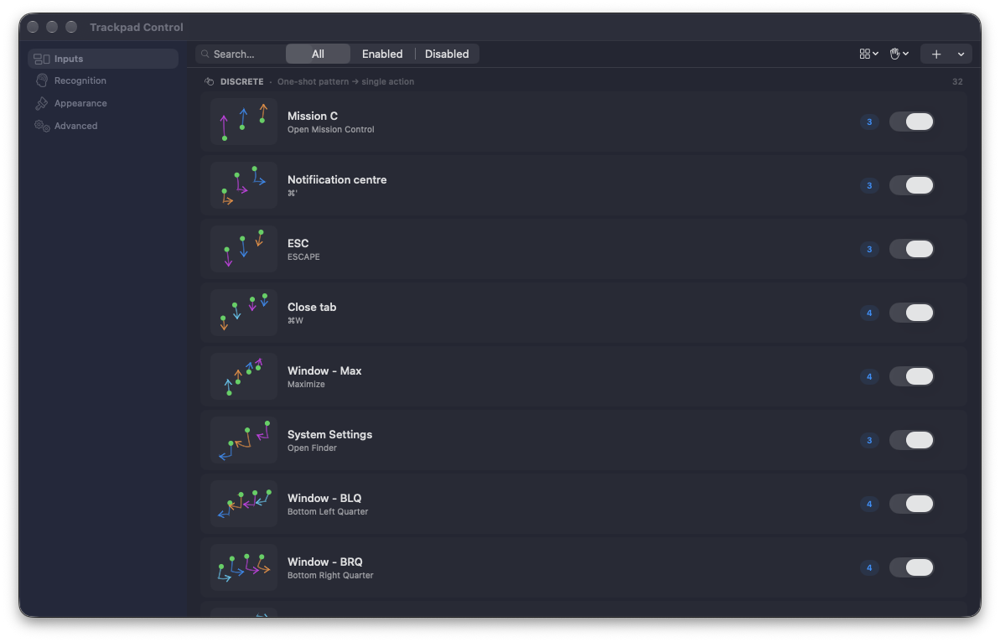

Draw your own
A shape can become any shortcut.
Record a circle, corner, line, or personal mark. Add multiple samples so recognition learns the way you really move.
Trackpad automation for macOS
Draw a gesture and get straight to the action. Open apps, run shortcuts, arrange windows, switch desktops, and control volume or brightness—without leaving the trackpad.
Version 1.2.2 · Apple silicon · macOS 26.4 or later
One surface. Many possibilities.
Use the gestures that feel natural to you. Trackpad Control separates gestures by finger count, recognizes the path, and fires the action you chose.
Record a circle, corner, line, or personal mark. Add multiple samples so recognition learns the way you really move.
Turn single, double, or triple taps in nine trackpad zones into immediate actions.
Slide for volume, brightness, desktop navigation, window cycling, or your own shortcut.
Map spread, pinch, and rotation to smooth two-direction controls with adjustable sensitivity.
Stay in motion
Glide through Mission Control with a clear native highlight. Lift your fingers to choose the window you can already see.
Start in minutes
Trackpad Control lives quietly in the menu bar. Set it up once, then let muscle memory take over.
Unzip the download and move trackpad_control.app into Applications.
Control-click the app, choose Open, then confirm. This is needed because the current download is unsigned.
Grant Accessibility and Automation when macOS asks. These permissions let gestures run shortcuts and manage windows.
Open Settings from the menu bar, enable a starter gesture, or press + to create your own.

The everyday guide
A few small choices make gestures feel fast and predictable.
One through five fingers create separate gesture groups, so the same shape can do different things in different layers.
Draw the gesture as you would in daily use. A few samples teach the recognizer your normal speed and shape.
Use clear corners and directions when two gestures share a finger count. The live overlay shows what the app saw.
Adjust sensitivity for the distance that feels comfortable. Higher values trigger smaller, finer steps.
Your gesture, your action
Good to know
The downloadable v1.2.2 release requires an Apple silicon Mac running macOS 26.4 or later.
The current release is not signed with an Apple Developer certificate. Control-click the app, choose Open, and confirm once.
Accessibility lets Trackpad Control manage windows and send input. Automation lets it ask System Events to perform the shortcuts assigned to gestures.
Your gesture library and recognition settings stay on your Mac. You can export a backup from Settings and import it later.
Open an issue on GitHub with the gesture type, finger count, and what you expected to happen.
Ready when your fingers are
Give the trackpad a vocabulary built around the way you work.
Download Trackpad Control v1.2.2 · macOS 26.4+ · Apple silicon